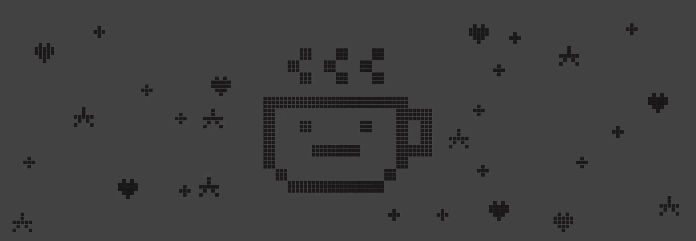
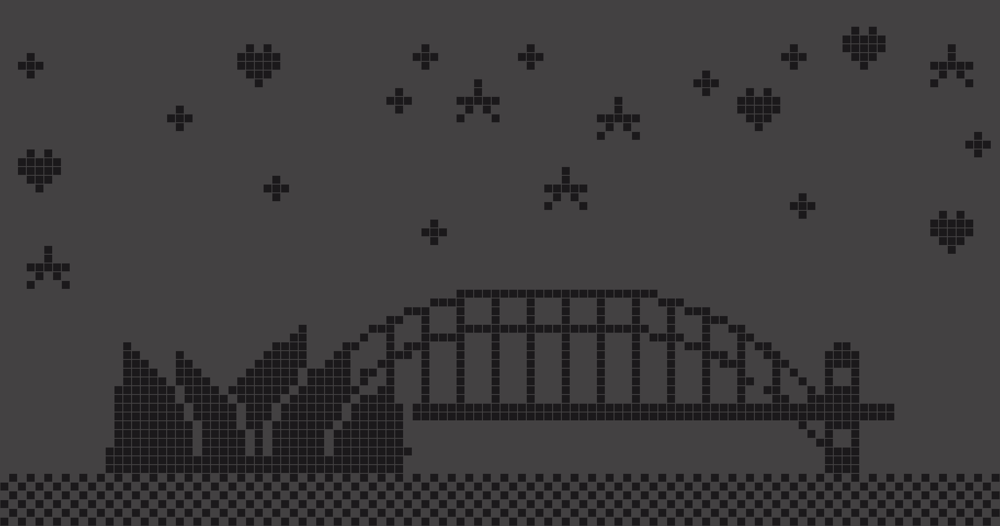

Hi, I'm Lia.
AI Founder | City Planner | Traffic Engineer | GIS & Data Analyst
Sydney, NSW


// in progress
Plan smarter, move faster.

PedLight-SAC
Reinforcement learning for traffic signal control with vehicle–pedestrian balance. Trained on two intersections along Anzac Parade in SUMO, and compared with SCATS.
ExploreMapping Equity
Mapping of amenity equity in Blacktown. Ran hot spot analysis against population density and IRSAD, revealing underserved areas.
Explore

Reconnecting Homes
Urban design for East Killara. Improving transport accessibility, walkability, open space and greenery to revitalise the neighbourhood.
ExploreBridging Community
Flood-resilient urban design for Windsor. A connected rooftop community serves everyday life and provides vertical evacuation during floods.
Explore